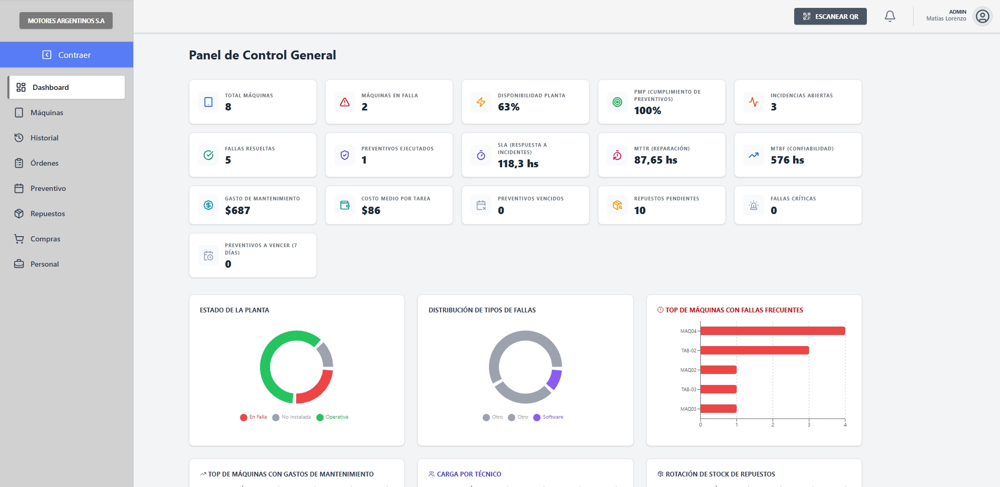

FixFactory
Sistema de Gestión de Mantenimiento Industrial
Grupo 2 | ExSixDevs | Comisión A - 2026
Proyecto y Solución (Branko)
La Problemática
Gestión informal basada en Excel y WhatsApp. Tiempos muertos elevados y falta total de trazabilidad en las PyMEs.
La Solución SaaS
Un flujo que conecta Producción, Mantenimiento y Compras en una sola plataforma en la nube.
Metodología y MVP
Trabajamos con Scrum simplificado para coordinar al equipo. Logramos un MVP funcional que integra módulos de incidencias, máquinas y órdenes de trabajo.
Experiencia de Usuario (Camila)
Diseñamos FixFactory para minimizar la fricción en el piso de la fábrica, donde los operarios necesitan herramientas rápidas y directas.
Mobile First & Códigos QR
Escaneo rápido para reportar fallas y adjuntar fotografías directamente desde el celular del operario.
Arquitectura por Roles
Vistas adaptadas para Operario, Técnico, Jefe de Mantenimiento y Gerencia.
Carga Cognitiva Reducida
Interfaces limpias, botones de alto contraste y flujos de acción claros (ej. Reportar Falla).
Desarrollo Frontend (Martín)
Stack Tecnológico
Single Page Application (SPA) construida con React 19, TypeScript, y Vite. Estilos implementados con Tailwind CSS.
Dashboard y Recharts
Gráficos dinámicos para visualizar KPIs en tiempo real como MTTR, MTBF y Costos Acumulados.
Conectividad y Estado
Consumo de API REST mediante Axios con interceptores de seguridad. Gestión del estado global y autenticación controlada por Zustand.
Arquitectura Backend (Matías)
Diseño basado en principios SOLID y arquitectura modular estricta separada en capas (Routes, Controllers, Services, Models).
API RESTful MERN
Plataforma construida sobre Node.js y Express, conectada a base de datos NoSQL MongoDB mediante Mongoose.
Seguridad Multi-Tenant
Aislamiento estricto de datos corporativos. Los Middlewares interceptan y validan el
companyId en cada token JWT.
Máquina de Estados
Lógica compleja centralizada que gestiona el ciclo de vida de Órdenes de Trabajo, asignaciones, notificaciones y mantenimiento preventivo.
Calidad y QA (Fernando)
Pruebas E2E (Playwright)
Automatización del flujo core: logueo de operario, reporte de incidencia, asignación de jefe y cierre técnico.
Pruebas Unitarias (Jest)
Validación aislada de módulos críticos, como el encriptado en
PasswordHasher y las reglas de negocio en agenda.service.
Validación de Seguridad
Pruebas exhaustivas ejecutadas para confirmar que el aislamiento Multi-Tenant funciona correctamente y que los privilegios por Rol se respetan sin excepciones.